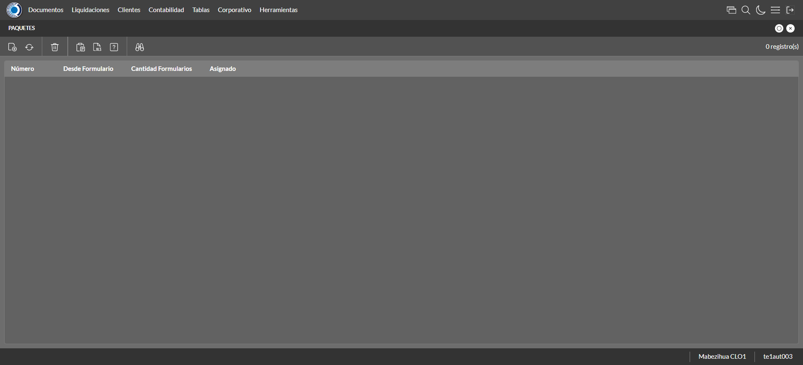
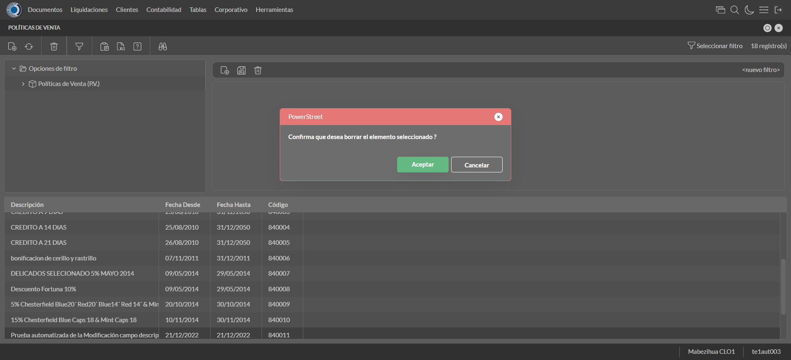
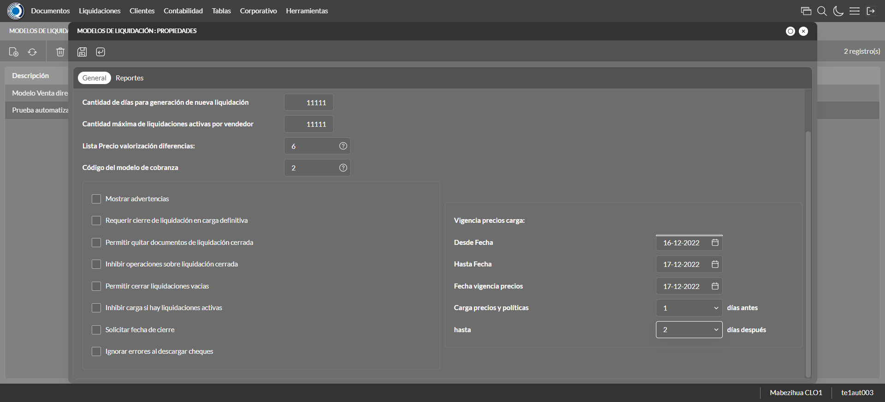

Desarrollado por : Area de Testing PWST
Fecha y hora de inicio : 2022-12-21 11:03:08
Duracion : 0:05:04.274422
Resultado : Total 32，Correctos 31 ，Errores 1 ，Taza de resultado 96.88%
Resumen 96.88% Errores 1 Fallidos 0 Correctos 31 Test realizados 32
| Caso de Prueba | Total | Correctos | Fallido | Error | Detalles | Captura del error |
| ScriptAmarillo.Test: Script Amarillo | 32 | 31 | 0 | 1 | Detalles | |
test |
ft1_1: 2022-12-21 11:03:10,114 - root - INFO - Se abre el chrome
2022-12-21 11:03:11,090 - root - INFO - Entra a la URL
2022-12-21 11:03:11,250 - root - INFO - Maximiza la pantalla
Traceback (most recent call last):
File "C:\Users\jsand\AppData\Local\Programs\Python\Python310\lib\site-packages\selenium-4.4.0-py3.10.egg\selenium\webdriver\remote\switch_to.py", line 87, in frame
frame_reference = self._driver.find_element(By.ID, frame_reference)
File "C:\Users\jsand\AppData\Local\Programs\Python\Python310\lib\site-packages\selenium-4.4.0-py3.10.egg\selenium\webdriver\remote\webdriver.py", line 856, in find_element
return self.execute(Command.FIND_ELEMENT, {
File "C:\Users\jsand\AppData\Local\Programs\Python\Python310\lib\site-packages\selenium-4.4.0-py3.10.egg\selenium\webdriver\remote\webdriver.py", line 434, in execute
self.error_handler.check_response(response)
File "C:\Users\jsand\AppData\Local\Programs\Python\Python310\lib\site-packages\selenium-4.4.0-py3.10.egg\selenium\webdriver\remote\errorhandler.py", line 243, in check_response
raise exception_class(message, screen, stacktrace)
selenium.common.exceptions.NoSuchElementException: Message: no such element: Unable to locate element: {"method":"css selector","selector":"[id="mainFrame"]"}
(Session info: chrome=108.0.5359.125)
Stacktrace:
Backtrace:
(No symbol) [0x00BFF243]
(No symbol) [0x00B87FD1]
(No symbol) [0x00A7D04D]
(No symbol) [0x00AAC0B0]
(No symbol) [0x00AAC22B]
(No symbol) [0x00ADE612]
(No symbol) [0x00AC85D4]
(No symbol) [0x00ADC9EB]
(No symbol) [0x00AC8386]
(No symbol) [0x00AA163C]
(No symbol) [0x00AA269D]
GetHandleVerifier [0x00E99A22+2655074]
GetHandleVerifier [0x00E8CA24+2601828]
GetHandleVerifier [0x00CA8C0A+619850]
GetHandleVerifier [0x00CA7830+614768]
(No symbol) [0x00B905FC]
(No symbol) [0x00B95968]
(No symbol) [0x00B95A55]
(No symbol) [0x00BA051B]
BaseThreadInitThunk [0x76796BD9+25]
RtlGetFullPathName_UEx [0x77B58FD2+1218]
RtlGetFullPathName_UEx [0x77B58F9D+1165]
During handling of the above exception, another exception occurred:
Traceback (most recent call last):
File "C:\Users\jsand\AppData\Local\Programs\Python\Python310\lib\site-packages\selenium-4.4.0-py3.10.egg\selenium\webdriver\remote\switch_to.py", line 90, in frame
frame_reference = self._driver.find_element(By.NAME, frame_reference)
File "C:\Users\jsand\AppData\Local\Programs\Python\Python310\lib\site-packages\selenium-4.4.0-py3.10.egg\selenium\webdriver\remote\webdriver.py", line 856, in find_element
return self.execute(Command.FIND_ELEMENT, {
File "C:\Users\jsand\AppData\Local\Programs\Python\Python310\lib\site-packages\selenium-4.4.0-py3.10.egg\selenium\webdriver\remote\webdriver.py", line 434, in execute
self.error_handler.check_response(response)
File "C:\Users\jsand\AppData\Local\Programs\Python\Python310\lib\site-packages\selenium-4.4.0-py3.10.egg\selenium\webdriver\remote\errorhandler.py", line 243, in check_response
raise exception_class(message, screen, stacktrace)
selenium.common.exceptions.NoSuchElementException: Message: no such element: Unable to locate element: {"method":"css selector","selector":"[name="mainFrame"]"}
(Session info: chrome=108.0.5359.125)
Stacktrace:
Backtrace:
(No symbol) [0x00BFF243]
(No symbol) [0x00B87FD1]
(No symbol) [0x00A7D04D]
(No symbol) [0x00AAC0B0]
(No symbol) [0x00AAC22B]
(No symbol) [0x00ADE612]
(No symbol) [0x00AC85D4]
(No symbol) [0x00ADC9EB]
(No symbol) [0x00AC8386]
(No symbol) [0x00AA163C]
(No symbol) [0x00AA269D]
GetHandleVerifier [0x00E99A22+2655074]
GetHandleVerifier [0x00E8CA24+2601828]
GetHandleVerifier [0x00CA8C0A+619850]
GetHandleVerifier [0x00CA7830+614768]
(No symbol) [0x00B905FC]
(No symbol) [0x00B95968]
(No symbol) [0x00B95A55]
(No symbol) [0x00BA051B]
BaseThreadInitThunk [0x76796BD9+25]
RtlGetFullPathName_UEx [0x77B58FD2+1218]
RtlGetFullPathName_UEx [0x77B58F9D+1165]
During handling of the above exception, another exception occurred:
Traceback (most recent call last):
File "C:\xampp\htdocs\versiones\automatizaciones\AutoPWST\ScriptAmarillo\testCase\ScriptAmarillo.py", line 83, in test
self.driver.switch_to.frame("mainFrame")
File "C:\Users\jsand\AppData\Local\Programs\Python\Python310\lib\site-packages\selenium-4.4.0-py3.10.egg\selenium\webdriver\remote\switch_to.py", line 92, in frame
raise NoSuchFrameException(frame_reference)
selenium.common.exceptions.NoSuchFrameException: Message: mainFrame
|
|
||||
test_000: Ingresa a la base de datos |
pt1_2: 2022-12-21 11:03:14,451 - root - INFO - Escribe el usuario
2022-12-21 11:03:14,653 - root - INFO - Escribe la contraseña
2022-12-21 11:03:14,785 - root - INFO - Se dio clic en el boton ingresar
2022-12-21 11:03:15,535 - root - INFO - Ejecutar Enterprise
2022-12-21 11:03:19,609 - root - INFO - Cambia entre pestañas
|
|
||||
test_001: Ingresa a pantalla Objetivos Diarios |
pt1_3: 2022-12-21 11:03:28,715 - root - INFO - Abre la pantalla de Objetivos Diarios
2022-12-21 11:03:29,330 - root - INFO - La pantalla ejecutada es Lista de precios.
2022-12-21 11:03:29,333 - root - INFO - Captura: C:\xampp\htdocs\versiones\automatizaciones\AutoPWST\ScriptAmarillo\report\img screen：20221221_11_03_29.png
2022-12-21 11:03:29,757 - root - INFO - Se presiona el boton 'Refrescar', para crear un nuevo registro igual al anterior.
2022-12-21 11:03:40,235 - root - INFO - Se presiona el boton 'Nuevo', para crear un nuevo registro.
|

|
||||
test_002: Agregar Objetivos Diarios |
pt1_4: 2022-12-21 11:03:40,898 - root - INFO - Se abrio la pantalla para el ingreso de un registro nuevo.
2022-12-21 11:03:41,042 - root - INFO - El campo 'Vendedor' si se encuentra visible.
2022-12-21 11:03:41,183 - root - INFO - El campo 'Fecha' si se encuentra visible.
2022-12-21 11:03:41,326 - root - INFO - El campo 'Efectividad %' si se encuentra visible.
2022-12-21 11:03:43,194 - root - INFO - Ingresa la efectividad del nuevo registro
2022-12-21 11:03:45,207 - root - INFO - Captura: C:\xampp\htdocs\versiones\automatizaciones\AutoPWST\ScriptAmarillo\report\img screen：20221221_11_03_45.png
2022-12-21 11:03:45,843 - root - INFO - Se hace el cambio de pestaña para continuar con el registro nuevo
2022-12-21 11:03:46,527 - root - INFO - Se presiona el boton 'Nuevo', para crear un nuevo registro.
2022-12-21 11:03:47,209 - root - INFO - El campo 'Grupo Política' si se encuentra visible.
2022-12-21 11:03:47,303 - root - INFO - El campo 'Tipo Objetivo' si se encuentra visible.
2022-12-21 11:03:47,373 - root - INFO - El campo 'Tipo Unidad' si se encuentra visible.
2022-12-21 11:03:47,446 - root - INFO - El campo 'Objetivo Cantidad' si se encuentra visible.
2022-12-21 11:03:47,529 - root - INFO - El campo 'Objetivo Cobertura' si se encuentra visible.
2022-12-21 11:03:50,187 - root - INFO - Ingresa el Objetivo Cantidad del nuevo registro
2022-12-21 11:03:50,359 - root - INFO - Ingresa el Objetivo Cobertura del nuevo registro
2022-12-21 11:03:50,519 - root - INFO - Se da clic en el boton Guardar; se debe crear un nuevo registro.
2022-12-21 11:03:50,725 - root - INFO - Se da clic en el boton Guardar; se debe crear un nuevo registro.
|

|
||||
test_003: Repetir Registro Objetivos Diarios |
pt1_5: 2022-12-21 11:03:50,991 - root - INFO - Se presiona el boton 'Refrescar', para crear un nuevo registro igual al anterior.
2022-12-21 11:03:56,101 - root - INFO - Se presiona el boton 'Nuevo', para crear un nuevo registro igual al anterior.
2022-12-21 11:03:56,686 - root - INFO - Se abrio la pantalla para el ingreso de un registro nuevo.
2022-12-21 11:03:56,746 - root - INFO - El campo 'Vendedor' si se encuentra visible.
2022-12-21 11:03:56,814 - root - INFO - El campo 'Fecha' si se encuentra visible.
2022-12-21 11:03:56,875 - root - INFO - El campo 'Efectividad %' si se encuentra visible.
2022-12-21 11:03:59,098 - root - INFO - Ingresa la efectividad del nuevo registro
2022-12-21 11:03:59,337 - root - INFO - Se da clic en el boton Guardar; se debe crear un nuevo registro.
2022-12-21 11:04:01,348 - root - INFO - Captura: C:\xampp\htdocs\versiones\automatizaciones\AutoPWST\ScriptAmarillo\report\img screen：20221221_11_04_01.png
2022-12-21 11:04:02,123 - root - INFO - Se presiona el boton 'Cerrar', para cerrar el mensaje de duplicidad de llave primaria
2022-12-21 11:04:02,241 - root - INFO - Se presiona el boton 'Cerrar', para cerrar la ventana
|
|||||
test_004: Modifica Objetivos Diarios |
pt1_6: 2022-12-21 11:04:02,426 - root - INFO - Se presiona el boton 'Refrescar', para crear un nuevo registro igual al anterior.
2022-12-21 11:04:04,233 - root - INFO - Se da clic en el registro creado, para proceder a modificarlo.
2022-12-21 11:04:04,987 - root - INFO - Ingresa la efectividad del nuevo registro
2022-12-21 11:04:06,994 - root - INFO - Captura: C:\xampp\htdocs\versiones\automatizaciones\AutoPWST\ScriptAmarillo\report\img screen：20221221_11_04_06.png
2022-12-21 11:04:07,525 - root - INFO - Se hace el cambio de pestaña para continuar con el registro nuevo
2022-12-21 11:04:08,832 - root - INFO - Se da clic en el registro creado, para proceder a modificarlo.
2022-12-21 11:04:11,819 - root - INFO - Ingresa el Objetivo Cantidad del nuevo registro
2022-12-21 11:04:12,013 - root - INFO - Ingresa el Objetivo Cobertura del nuevo registro
2022-12-21 11:04:12,139 - root - INFO - Se da clic en el boton Guardar; se debe crear un nuevo registro.
2022-12-21 11:04:12,296 - root - INFO - Se da clic en el boton Guardar; se debe modificar la informacion del registro.
|

|
||||
test_005: Elimina Objetivos Diarios |
pt1_7: 2022-12-21 11:04:12,608 - root - INFO - Se presiona el boton 'Refrescar', para proceder a eliminar el registro.
2022-12-21 11:04:14,256 - root - INFO - Se da clic en el registro creado, para proceder a eliminarlo.
2022-12-21 11:04:14,413 - root - INFO - Se presiona el boton 'Eliminar', para eliminar el registro.
2022-12-21 11:04:16,424 - root - INFO - Captura: C:\xampp\htdocs\versiones\automatizaciones\AutoPWST\ScriptAmarillo\report\img screen：20221221_11_04_16.png
2022-12-21 11:04:17,068 - root - INFO - Se confirma el eliminado del registro
2022-12-21 11:04:17,299 - root - INFO - Se presiona el boton 'Refrescar', para crear un nuevo registro igual al anterior.
2022-12-21 11:04:17,617 - root - INFO - Se presiona el boton 'Cerrar', para cerrar la pantalla de Categorias Fiscales.
|

|
||||
test_006: Ingresa a pantalla Pop Ups |
pt1_8: 2022-12-21 11:04:18,933 - root - INFO - Abre la pantalla de PopUps
2022-12-21 11:04:20,294 - root - INFO - La pantalla ejecutada es PopUps.
2022-12-21 11:04:21,308 - root - INFO - Captura: C:\xampp\htdocs\versiones\automatizaciones\AutoPWST\ScriptAmarillo\report\img screen：20221221_11_04_21.png
2022-12-21 11:04:23,274 - root - INFO - Se ordenó por codigo.
2022-12-21 11:04:33,551 - root - INFO - Se presiona el boton 'Nuevo', para crear un nuevo registro.
|

|
||||
test_007: Agregar Pop Ups |
pt1_9: 2022-12-21 11:04:34,155 - root - INFO - Se abrio la pantalla para el ingreso de un registro nuevo.
2022-12-21 11:04:34,239 - root - INFO - El campo 'Codigo' si se encuentra visible.
2022-12-21 11:04:34,325 - root - INFO - El campo 'Orden' si se encuentra visible.
2022-12-21 11:04:34,401 - root - INFO - El campo 'Activo' si se encuentra visible.
2022-12-21 11:04:34,477 - root - INFO - El campo 'Descrición' si se encuentra visible.
2022-12-21 11:04:34,574 - root - INFO - El campo 'Modo Visualización' si se encuentra visible.
2022-12-21 11:04:34,659 - root - INFO - El campo 'Tipo Popup' si se encuentra visible.
2022-12-21 11:04:34,839 - root - INFO - El campo 'Fecha Desde' si se encuentra visible.
2022-12-21 11:04:34,910 - root - INFO - El campo 'Fecha Hasta' si se encuentra visible.
2022-12-21 11:04:34,978 - root - INFO - El campo 'Texto' si se encuentra visible.
2022-12-21 11:04:35,046 - root - INFO - El campo 'Seleccione Imagen' si se encuentra visible.
2022-12-21 11:04:35,149 - root - INFO - Ingresa el codigo del nuevo registro
2022-12-21 11:04:35,291 - root - INFO - Ingresa la orden del nuevo registro
2022-12-21 11:04:36,537 - root - INFO - Hizo click en el checkbox Activo
2022-12-21 11:04:36,862 - root - INFO - Ingresa la descripción del nuevo registro
2022-12-21 11:04:37,312 - root - INFO - Se dió click en la opción Pantalla Held.
2022-12-21 11:04:38,458 - root - INFO - Se dió doble click en el registro de Tipo Pop Up.
2022-12-21 11:04:38,832 - root - INFO - Ingresa el texto del nuevo registro
2022-12-21 11:04:39,847 - root - INFO - Captura: C:\xampp\htdocs\versiones\automatizaciones\AutoPWST\ScriptAmarillo\report\img screen：20221221_11_04_39.png
2022-12-21 11:04:40,460 - root - INFO - Se da clic en el boton Guardar; se debe crear un nuevo registro.
|

|
||||
test_008: Repetir Registro Pop Ups |
pt1_10: 2022-12-21 11:04:40,716 - root - INFO - Se presiona el boton 'Refrescar', para crear un nuevo registro igual al anterior.
2022-12-21 11:04:41,537 - root - INFO - Se presiona el boton 'Nuevo', para crear un nuevo registro igual al anterior.
2022-12-21 11:04:42,215 - root - INFO - Se abrio la pantalla para el ingreso de un registro nuevo.
2022-12-21 11:04:42,346 - root - INFO - El campo 'Codigo' si se encuentra visible.
2022-12-21 11:04:42,468 - root - INFO - El campo 'Orden' si se encuentra visible.
2022-12-21 11:04:42,584 - root - INFO - El campo 'Activo' si se encuentra visible.
2022-12-21 11:04:42,710 - root - INFO - El campo 'Descrición' si se encuentra visible.
2022-12-21 11:04:42,786 - root - INFO - El campo 'Modo Visualización' si se encuentra visible.
2022-12-21 11:04:42,842 - root - INFO - El campo 'Tipo Popup' si se encuentra visible.
2022-12-21 11:04:42,896 - root - INFO - El campo 'Fecha Desde' si se encuentra visible.
2022-12-21 11:04:42,952 - root - INFO - El campo 'Fecha Hasta' si se encuentra visible.
2022-12-21 11:04:43,039 - root - INFO - El campo 'Texto' si se encuentra visible.
2022-12-21 11:04:43,110 - root - INFO - El campo 'Seleccione Imagen' si se encuentra visible.
2022-12-21 11:04:43,223 - root - INFO - Ingresa el codigo del nuevo registro
2022-12-21 11:04:43,369 - root - INFO - Ingresa la orden del nuevo registro
2022-12-21 11:04:44,582 - root - INFO - Hizo click en el checkbox Activo
2022-12-21 11:04:44,876 - root - INFO - Ingresa la descripción del nuevo registro
2022-12-21 11:04:45,338 - root - INFO - Se dió click en la opción Pantalla Hand Held.
2022-12-21 11:04:46,372 - root - INFO - Se dió doble click en el registro de Tipo PopUp.
2022-12-21 11:04:46,747 - root - INFO - Ingresa el texto del nuevo registro
2022-12-21 11:04:46,919 - root - INFO - Se da clic en el boton Guardar; NO se debe crear un nuevo registro.
2022-12-21 11:04:47,927 - root - INFO - Captura: C:\xampp\htdocs\versiones\automatizaciones\AutoPWST\ScriptAmarillo\report\img screen：20221221_11_04_47.png
2022-12-21 11:04:48,676 - root - INFO - Se presiona el boton 'Cerrar', para cerrar el mensaje de duplicidad de llave primaria
2022-12-21 11:04:48,813 - root - INFO - Se presiona el boton 'Cerrar', para cerrar la ventana
|
|||||
test_009: Modifica Pop Ups |
pt1_11: 2022-12-21 11:04:49,021 - root - INFO - Se presiona el boton 'Refrescar', para proceder a modificar el registro.
2022-12-21 11:04:51,125 - root - INFO - Se dió dos veces click en el encabezado para modificar el orden de los registros.
2022-12-21 11:04:53,467 - root - INFO - Se da clic en el registro creado, para proceder a modificarlo.
2022-12-21 11:04:54,280 - root - INFO - Se modifica el contenido del campo Orden
2022-12-21 11:04:55,493 - root - INFO - Hizo click en el checkbox activo
2022-12-21 11:04:56,145 - root - INFO - Se modifica el contenido del campo Descripción
2022-12-21 11:04:56,702 - root - INFO - Se dió click en la opción Ambos.
2022-12-21 11:04:58,035 - root - INFO - Se dió doble click en el registro de Tipo PopUp.
2022-12-21 11:04:58,574 - root - INFO - Se modifica el contenido del campo Texto
2022-12-21 11:04:59,589 - root - INFO - Captura: C:\xampp\htdocs\versiones\automatizaciones\AutoPWST\ScriptAmarillo\report\img screen：20221221_11_04_59.png
2022-12-21 11:05:00,092 - root - INFO - Se da clic en el boton Guardar; se debe modificar la informacion del registro.
|

|
||||
test_010: Elimina PopUps |
pt1_12: 2022-12-21 11:05:00,492 - root - INFO - Se presiona el boton 'Refrescar', para proceder a eliminar el registro.
2022-12-21 11:05:02,170 - root - INFO - Se da clic en el registro creado, para proceder a eliminarlo.
2022-12-21 11:05:03,327 - root - INFO - Se presiona el boton 'Eliminar', para eliminar el registro.
2022-12-21 11:05:03,329 - root - INFO - Captura: C:\xampp\htdocs\versiones\automatizaciones\AutoPWST\ScriptAmarillo\report\img screen：20221221_11_05_03.png
2022-12-21 11:05:03,847 - root - INFO - Se confirma el eliminado del registro
2022-12-21 11:05:04,754 - root - INFO - Se presiona el boton 'Refrescar', para veriicar si el registro ha sido eliminado.
2022-12-21 11:05:05,840 - root - INFO - Se presiona el boton 'Cerrar', para cerrar la pantalla de Pop Ups.
|

|
||||
test_011: Ingresa a pantalla Paquetes Formulario |
pt1_13: 2022-12-21 11:05:06,972 - root - INFO - Abre la pantalla de Paquetes de Formularios
2022-12-21 11:05:07,560 - root - INFO - Captura: C:\xampp\htdocs\versiones\automatizaciones\AutoPWST\ScriptAmarillo\report\img screen：20221221_11_05_07.png
2022-12-21 11:05:07,867 - root - INFO - La pantalla ejecutada es Zonas de Ventas.
2022-12-21 11:05:18,124 - root - INFO - Se presiona el boton 'Nuevo', para crear un nuevo registro.
|
 | ||||
test_012: Agregar Paquetes Formulario |
pt1_14: 2022-12-21 11:05:18,809 - root - INFO - Se abrio la pantalla para el ingreso de un registro nuevo.
2022-12-21 11:05:18,893 - root - INFO - El campo 'Número Paquete' si se encuentra visible.
2022-12-21 11:05:18,962 - root - INFO - El campo 'Formulario Inicial' si se encuentra visible.
2022-12-21 11:05:19,021 - root - INFO - El campo 'Cantidad Formularios' si se encuentra visible.
2022-12-21 11:05:20,126 - root - INFO - Captura: C:\xampp\htdocs\versiones\automatizaciones\AutoPWST\ScriptAmarillo\report\img screen：20221221_11_05_20.png
2022-12-21 11:05:20,419 - root - INFO - Ingresa la cantidad de formularios del nuevo registro
2022-12-21 11:05:20,500 - root - INFO - Se da clic en el boton Guardar; se debe crear un nuevo registro.
|

|
||||
test_013: Modifica Paquetes Formulario |
pt1_15: 2022-12-21 11:05:20,707 - root - INFO - Se presiona el boton 'Refrescar', para crear un nuevo registro igual al anterior.
2022-12-21 11:05:23,016 - root - INFO - Se da clic en el registro creado, para proceder a modificarlo.
2022-12-21 11:05:24,076 - root - INFO - Captura: C:\xampp\htdocs\versiones\automatizaciones\AutoPWST\ScriptAmarillo\report\img screen：20221221_11_05_24.png
2022-12-21 11:05:24,576 - root - INFO - Se presiona el boton 'Cerrar', para cerrar la ventana
|

|
||||
test_014: Elimina Paquetes Formulario |
pt1_16: 2022-12-21 11:05:24,783 - root - INFO - Se presiona el boton 'Refrescar', para proceder a eliminar el registro.
2022-12-21 11:05:26,485 - root - INFO - Se da clic en el registro creado, para proceder a eliminarlo.
2022-12-21 11:05:26,698 - root - INFO - Se presiona el boton 'Eliminar', para eliminar el registro.
2022-12-21 11:05:27,708 - root - INFO - Captura: C:\xampp\htdocs\versiones\automatizaciones\AutoPWST\ScriptAmarillo\report\img screen：20221221_11_05_27.png
2022-12-21 11:05:28,109 - root - INFO - Se confirma el eliminado del registro
2022-12-21 11:05:28,277 - root - INFO - Se presiona el boton 'Refrescar', para crear un nuevo registro igual al anterior.
2022-12-21 11:05:28,402 - root - INFO - Se presiona el boton 'Cerrar', para cerrar la pantalla de Categorias Fiscales.
|

|
||||
test_015: Ingresa a pantalla Perfiles Comision |
pt1_17: 2022-12-21 11:05:29,474 - root - INFO - Abre la pantalla de Perfiles de Comisión
2022-12-21 11:05:30,120 - root - INFO - La pantalla ejecutada es Perfiles de Comisión.
2022-12-21 11:05:30,123 - root - INFO - Captura: C:\xampp\htdocs\versiones\automatizaciones\AutoPWST\ScriptAmarillo\report\img screen：20221221_11_05_30.png
2022-12-21 11:05:40,626 - root - INFO - Se presiona el boton 'Nuevo', para crear un nuevo registro.
|

|
||||
test_016: Agregar Perfiles Comision |
pt1_18: 2022-12-21 11:05:41,265 - root - INFO - Se abrio la pantalla para el ingreso de un registro nuevo.
2022-12-21 11:05:41,373 - root - INFO - El campo 'Codigo' si se encuentra visible.
2022-12-21 11:05:41,491 - root - INFO - El campo 'Descrición' si se encuentra visible.
2022-12-21 11:05:41,627 - root - INFO - El campo 'Porcentaje Global' si se encuentra visible.
2022-12-21 11:05:41,693 - root - INFO - El campo 'Con impuesto' si se encuentra visible.
2022-12-21 11:05:41,741 - root - INFO - El campo 'Comisión Repartidor' si se encuentra visible.
2022-12-21 11:05:41,823 - root - INFO - Ingresa el codigo del nuevo registro
2022-12-21 11:05:41,952 - root - INFO - Ingresa la descripción del nuevo registro
2022-12-21 11:05:42,089 - root - INFO - Ingresa el Porcentaje Global del nuevo registro
2022-12-21 11:05:42,209 - root - INFO - Se hizó click en el Checkbox Con impuesto
2022-12-21 11:05:42,327 - root - INFO - Se hizó click en el checkbox Comisión Repartidor
2022-12-21 11:05:43,336 - root - INFO - Captura: C:\xampp\htdocs\versiones\automatizaciones\AutoPWST\ScriptAmarillo\report\img screen：20221221_11_05_43.png
2022-12-21 11:05:43,795 - root - INFO - Se hace el cambio a la pestaña Topes para continuar con el registro nuevo
2022-12-21 11:05:44,543 - root - INFO - Se presiona el boton 'Nuevo', para crear un nuevo registro de Topes.
2022-12-21 11:05:45,221 - root - INFO - El campo 'Moneda' si se encuentra visible.
2022-12-21 11:05:45,367 - root - INFO - El campo 'Tope' si se encuentra visible.
2022-12-21 11:05:45,497 - root - INFO - El campo 'Porcentaje' si se encuentra visible.
2022-12-21 11:05:46,875 - root - INFO - Se dió doble click en el registro de Moneda.
2022-12-21 11:05:47,059 - root - INFO - Ingresa el tope del nuevo registro
2022-12-21 11:05:47,194 - root - INFO - Ingresa el Porcentaje del nuevo registro
2022-12-21 11:05:47,307 - root - INFO - Se da clic en el boton Guardar; se debe crear un nuevo registro de Topes.
2022-12-21 11:05:47,475 - root - INFO - Se hace el cambio a la pestaña Cuenta Articulo para continuar con el registro nuevo
2022-12-21 11:05:48,135 - root - INFO - Se presiona el boton 'Nuevo', para crear un nuevo registro de Cuenta Articulo.
2022-12-21 11:05:48,806 - root - INFO - El campo 'Cuenta' si se encuentra visible.
2022-12-21 11:05:48,939 - root - INFO - El campo 'Artículo' si se encuentra visible.
2022-12-21 11:05:48,989 - root - INFO - El campo 'Porcentaje' si se encuentra visible.
2022-12-21 11:05:50,654 - root - INFO - Se dió doble click en el registro de Cuenta.
2022-12-21 11:05:52,061 - root - INFO - Se dió doble click en el registro de Articulo.
2022-12-21 11:05:52,270 - root - INFO - Ingresa el Porcentaje del nuevo registro
2022-12-21 11:05:52,406 - root - INFO - Se da clic en el boton Guardar; se debe crear un nuevo registro de Cuenta Articulo.
2022-12-21 11:05:52,608 - root - INFO - Se hace el cambio a la pestaña Cuentas para continuar con el registro nuevo
2022-12-21 11:05:53,253 - root - INFO - Se presiona el boton 'Nuevo', para crear un nuevo registro de Cuentas.
2022-12-21 11:05:53,859 - root - INFO - El campo 'Cuenta' si se encuentra visible.
2022-12-21 11:05:53,923 - root - INFO - El campo 'Porcentaje' si se encuentra visible.
2022-12-21 11:05:55,523 - root - INFO - Se dió doble click en el registro de Cuenta.
2022-12-21 11:05:55,760 - root - INFO - Ingresa el Porcentaje del nuevo registro
2022-12-21 11:05:55,871 - root - INFO - Se da clic en el boton Guardar; se debe crear un nuevo registro de Cuentas.
2022-12-21 11:05:56,058 - root - INFO - Se hace el cambio a la pestaña Articulos para continuar con el registro nuevo
2022-12-21 11:05:56,699 - root - INFO - Se presiona el boton 'Nuevo', para crear un nuevo registro de Articulos.
2022-12-21 11:05:57,288 - root - INFO - El campo 'Artículo' si se encuentra visible.
2022-12-21 11:05:57,348 - root - INFO - El campo 'Porcentaje' si se encuentra visible.
2022-12-21 11:05:58,883 - root - INFO - Se dió doble click en el registro de Articulo.
2022-12-21 11:05:59,178 - root - INFO - Ingresa el Porcentaje del nuevo registro
2022-12-21 11:05:59,413 - root - INFO - Se da clic en el boton Guardar; se debe crear un nuevo registro de Articulos.
2022-12-21 11:05:59,677 - root - INFO - Se hace el cambio a la pestaña Tipos de Documento para continuar con el registro nuevo
2022-12-21 11:06:00,349 - root - INFO - Se presiona el boton 'Nuevo', para crear un nuevo registro de Tipo Documento.
2022-12-21 11:06:01,032 - root - INFO - El campo 'Tipo Documento' si se encuentra visible.
2022-12-21 11:06:01,135 - root - INFO - El campo 'Origen' si se encuentra visible.
2022-12-21 11:06:01,201 - root - INFO - El campo 'Signo' si se encuentra visible.
2022-12-21 11:06:01,273 - root - INFO - El campo 'Cancelado' si se encuentra visible.
2022-12-21 11:06:02,447 - root - INFO - Se dió doble click en el registro de Tipo Documento.
2022-12-21 11:06:05,046 - root - INFO - Se dió click en la opción Backoffice.
2022-12-21 11:06:05,478 - root - INFO - Se dió click en la opción Suma.
2022-12-21 11:06:05,618 - root - INFO - Se dió click en el checkbox Cancelado.
2022-12-21 11:06:05,728 - root - INFO - Se da clic en el boton Guardar; se debe crear un nuevo registro de Tipos Documento.
2022-12-21 11:06:05,955 - root - INFO - Se da clic en el boton Guardar; se debe crear un nuevo registro.
|

|
||||
test_017: Repetir Registro Perfiles Comision |
pt1_19: 2022-12-21 11:06:06,208 - root - INFO - Se presiona el boton 'Refrescar', para crear un nuevo registro igual al anterior.
2022-12-21 11:06:06,332 - root - INFO - Se presiona el boton 'Nuevo', para crear un nuevo registro igual al anterior.
2022-12-21 11:06:06,930 - root - INFO - Se abrio la pantalla para el ingreso de un registro nuevo.
2022-12-21 11:06:07,004 - root - INFO - El campo 'Codigo' si se encuentra visible.
2022-12-21 11:06:07,071 - root - INFO - El campo 'Descrición' si se encuentra visible.
2022-12-21 11:06:07,145 - root - INFO - El campo 'Porcentaje Global' si se encuentra visible.
2022-12-21 11:06:07,224 - root - INFO - El campo 'Con impuesto' si se encuentra visible.
2022-12-21 11:06:07,302 - root - INFO - El campo 'Comisión Repartidor' si se encuentra visible.
2022-12-21 11:06:07,389 - root - INFO - Ingresa el codigo del nuevo registro
2022-12-21 11:06:07,505 - root - INFO - Ingresa la descripción del nuevo registro
2022-12-21 11:06:07,602 - root - INFO - Ingresa el Porcentaje Global del nuevo registro
2022-12-21 11:06:07,700 - root - INFO - Se hizó click en el Checkbox Con impuesto
2022-12-21 11:06:07,806 - root - INFO - Se hizó click en el checkbox Comisión Repartidor
2022-12-21 11:06:07,914 - root - INFO - Se da clic en el boton Guardar; No se debe crear un nuevo registro.
2022-12-21 11:06:08,917 - root - INFO - Captura: C:\xampp\htdocs\versiones\automatizaciones\AutoPWST\ScriptAmarillo\report\img screen：20221221_11_06_08.png
2022-12-21 11:06:09,359 - root - INFO - Se presiona el boton 'Cerrar', para cerrar el mensaje de duplicidad de llave primaria
2022-12-21 11:06:09,478 - root - INFO - Se presiona el boton 'Cerrar', para cerrar la ventana
|
|||||
test_018: Modifica Perfiles Comision |
pt1_20: 2022-12-21 11:06:09,588 - root - INFO - Se presiona el boton 'Refrescar', para proceder a modificar el registro.
2022-12-21 11:06:11,286 - root - INFO - Se da doble click en el registro creado, para proceder a modificarlo.
2022-12-21 11:06:11,987 - root - INFO - Se modifica el contenido del campo Descripción
2022-12-21 11:06:12,120 - root - INFO - Se modifica el contenido del campo Porcentaje Global
2022-12-21 11:06:12,219 - root - INFO - Se hizó click en el checkbox Con impuesto
2022-12-21 11:06:12,322 - root - INFO - Se hizó click en el checkbox Comisión Repartidor
2022-12-21 11:06:14,328 - root - INFO - Captura: C:\xampp\htdocs\versiones\automatizaciones\AutoPWST\ScriptAmarillo\report\img screen：20221221_11_06_14.png
2022-12-21 11:06:14,565 - root - INFO - Se da clic en el boton Guardar; se debe modificar la informacion del registro.
|

|
||||
test_019: Elimina Perfiles Comision |
pt1_21: 2022-12-21 11:06:14,940 - root - INFO - Se presiona el boton 'Refrescar', para proceder a eliminar el registro.
2022-12-21 11:06:16,579 - root - INFO - Se da clic en el registro creado, para proceder a eliminarlo.
2022-12-21 11:06:17,755 - root - INFO - Se da clic en la ventana de tope, para proceder a eliminarlo.
2022-12-21 11:06:18,887 - root - INFO - Se da clic en el tope creado, para proceder a eliminarlo.
2022-12-21 11:06:19,653 - root - INFO - Se da clic en la ventana cuenta/articulo, para proceder a eliminarlo.
2022-12-21 11:06:20,799 - root - INFO - Se da clic en la cuenta/articulo creado, para proceder a eliminarlo.
2022-12-21 11:06:21,512 - root - INFO - Se da clic en la ventana cuentas, para proceder a eliminarlo.
2022-12-21 11:06:22,632 - root - INFO - Se da clic en la cuenta creado, para proceder a eliminarlo.
2022-12-21 11:06:23,364 - root - INFO - Se da clic en la cuenta/articulo creado, para proceder a eliminarlo.
2022-12-21 11:06:24,545 - root - INFO - Se da clic en el articulo creado, para proceder a eliminarlo.
2022-12-21 11:06:25,449 - root - INFO - Se da clic en la ventana tipo documento, para proceder a eliminarlo.
2022-12-21 11:06:26,563 - root - INFO - Se da clic en el tipo de documento creado, para proceder a eliminarlo.
2022-12-21 11:06:26,814 - root - INFO - Se da clic en el boton Guardar; se debe crear un nuevo registro.
2022-12-21 11:06:27,454 - root - INFO - Se da clic en el registro creado, para proceder a eliminarlo.
2022-12-21 11:06:27,625 - root - INFO - Se presiona el boton 'Eliminar', para eliminar el registro.
2022-12-21 11:06:27,627 - root - INFO - Captura: C:\xampp\htdocs\versiones\automatizaciones\AutoPWST\ScriptAmarillo\report\img screen：20221221_11_06_27.png
2022-12-21 11:06:27,995 - root - INFO - Se confirma el eliminado del registro
2022-12-21 11:06:28,162 - root - INFO - Se presiona el boton 'Refrescar', para verificar que el registro se ha eliminado.
2022-12-21 11:06:28,272 - root - INFO - Se presiona el boton 'Cerrar', para cerrar la pantalla de Perfiles de Comisión.
|
|||||
test_020: Ingresa a pantalla Politicas de Venta |
pt1_22: 2022-12-21 11:06:29,346 - root - INFO - Abre la pantalla de Politicas de Venta
2022-12-21 11:06:30,060 - root - INFO - La pantalla ejecutada es Politicas de Venta
2022-12-21 11:06:31,074 - root - INFO - Captura: C:\xampp\htdocs\versiones\automatizaciones\AutoPWST\ScriptAmarillo\report\img screen：20221221_11_06_31.png
2022-12-21 11:06:41,919 - root - INFO - Se presiona el boton 'Nuevo', para crear un nuevo registro.
|

|
||||
test_021: Agregar Perfiles Politicas de Venta |
pt1_23: 2022-12-21 11:06:42,865 - root - INFO - Se abrio la pantalla para el ingreso de un registro nuevo.
2022-12-21 11:06:42,985 - root - INFO - El campo 'Codigo' si se encuentra visible.
2022-12-21 11:06:43,133 - root - INFO - El campo 'Codigo Alternativo' si se encuentra visible.
2022-12-21 11:06:43,247 - root - INFO - El campo 'Descrición' si se encuentra visible.
2022-12-21 11:06:43,528 - root - INFO - El campo 'Moneda' si se encuentra visible.
2022-12-21 11:06:43,657 - root - INFO - El campo 'Aplicable en' si se encuentra visible.
2022-12-21 11:06:43,771 - root - INFO - El campo 'Activa' si se encuentra visible.
2022-12-21 11:06:43,898 - root - INFO - El campo 'Aplicación Global' si se encuentra visible.
2022-12-21 11:06:44,109 - root - INFO - Ingresa el codigo del nuevo registro
2022-12-21 11:06:44,274 - root - INFO - Ingresa el codigo alternativo del nuevo registro
2022-12-21 11:06:44,480 - root - INFO - Ingresa la descripción del nuevo registro
2022-12-21 11:06:45,728 - root - INFO - Se dió doble click en el registro de Moneda.
2022-12-21 11:06:46,388 - root - INFO - Se dió click en la opción BackOffice y Mobile.
2022-12-21 11:06:47,545 - root - INFO - Se dió click en el checkbox Activa.
2022-12-21 11:06:47,654 - root - INFO - Se dió click en el checkbox Aplicación Global.
2022-12-21 11:06:47,769 - root - INFO - Se hace el cambio a la pestaña Por Articulo para continuar con el registro nuevo
2022-12-21 11:06:48,505 - root - INFO - Se presiona el boton 'Nuevo', para crear un nuevo registro de Por Articulo.
2022-12-21 11:06:49,216 - root - INFO - El campo 'Artículo' si se encuentra visible.
2022-12-21 11:06:49,258 - root - INFO - El campo 'Artículo a Bonificar' si se encuentra visible.
2022-12-21 11:06:49,302 - root - INFO - El campo 'Cantidad a Bonificar(Packing)' si se encuentra visible.
2022-12-21 11:06:49,343 - root - INFO - El campo 'Cantidad en Bonificación(Unidad)' si se encuentra visible.
2022-12-21 11:06:49,398 - root - INFO - El campo 'Tope Descuento 1' si se encuentra visible.
2022-12-21 11:06:49,455 - root - INFO - El campo 'Tope Descuento 2' si se encuentra visible.
2022-12-21 11:06:49,620 - root - INFO - Ingresa el Articulo del nuevo registro
2022-12-21 11:06:49,818 - root - INFO - Ingresa el Articulo a bonificar del nuevo registro
2022-12-21 11:06:50,036 - root - INFO - Ingresa la Cantidad a Bonificar del nuevo registro
2022-12-21 11:06:50,267 - root - INFO - Ingresa la Cantidad en Bonificación del nuevo registro
2022-12-21 11:06:50,583 - root - INFO - Ingresa el Tope Descuento 1 del nuevo registro
2022-12-21 11:06:51,108 - root - INFO - Ingresa el Tope Descuento 2 del nuevo registro
2022-12-21 11:06:52,118 - root - INFO - Captura: C:\xampp\htdocs\versiones\automatizaciones\AutoPWST\ScriptAmarillo\report\img screen：20221221_11_06_52.png
2022-12-21 11:06:52,679 - root - INFO - Se presiona el boton 'Guardar', para guardar el registro de Por Articulo.
2022-12-21 11:06:52,920 - root - INFO - Se da clic en el boton Guardar; se debe crear un nuevo registro.
|
|||||
test_022: Repetir Registro Politicas de Venta |
pt1_24: 2022-12-21 11:06:53,359 - root - INFO - Se presiona el boton 'Refrescar', para crear un nuevo registro igual al anterior.
2022-12-21 11:06:53,793 - root - INFO - Se presiona el boton 'Nuevo', para crear un nuevo registro igual al anterior.
2022-12-21 11:06:54,370 - root - INFO - Se abrio la pantalla para el ingreso de un registro nuevo.
2022-12-21 11:06:54,751 - root - INFO - Ingresa el codigo del nuevo registro
2022-12-21 11:06:54,936 - root - INFO - Ingresa el codigo alternativo del nuevo registro
2022-12-21 11:06:55,352 - root - INFO - Ingresa la descripción del nuevo registro
2022-12-21 11:06:56,728 - root - INFO - Se dió doble click en el registro de Moneda.
2022-12-21 11:06:57,236 - root - INFO - Se dió click en la opción BackOffice y Mobile.
2022-12-21 11:06:57,345 - root - INFO - Se dió click en el checkbox Activa.
2022-12-21 11:06:57,451 - root - INFO - Se dió click en el checkbox Aplicación Global.
2022-12-21 11:06:57,586 - root - INFO - Se da clic en el boton Guardar; No se debe crear un nuevo registro.
2022-12-21 11:06:58,596 - root - INFO - Captura: C:\xampp\htdocs\versiones\automatizaciones\AutoPWST\ScriptAmarillo\report\img screen：20221221_11_06_58.png
2022-12-21 11:06:59,132 - root - INFO - Se presiona el boton 'Cerrar', para cerrar el mensaje de duplicidad de llave primaria
2022-12-21 11:06:59,262 - root - INFO - Se presiona el boton 'Cerrar', para cerrar la ventana
|
|||||
test_023: Modifica Politicas de Venta |
pt1_25: 2022-12-21 11:06:59,420 - root - INFO - Se presiona el boton 'Refrescar', para proceder a modificar el registro.
2022-12-21 11:07:01,126 - root - INFO - Se da clic en el registro creado, para proceder a modificarlo.
2022-12-21 11:07:02,157 - root - INFO - Se modifica el contenido del campo Codigo Alternativo
2022-12-21 11:07:02,695 - root - INFO - Se modifica el contenido del campo Descripcion
2022-12-21 11:07:02,915 - root - INFO - Se dió click en el checkbox Aplicación Global.
2022-12-21 11:07:03,175 - root - INFO - Se hace el cambio a la pestaña Por Articulo para continuar con la modificacion del registro
2022-12-21 11:07:04,091 - root - INFO - Se da clic en el registro de Por Articulo, para proceder a modificarlo.
2022-12-21 11:07:05,104 - root - INFO - Se modifica el contenido del campo Articulo
2022-12-21 11:07:05,420 - root - INFO - Se modifica el contenido del campo Articulo a Bonificar
2022-12-21 11:07:06,095 - root - INFO - Se modifica el contenido del campo Cantidad a Bonificar
2022-12-21 11:07:06,500 - root - INFO - Se modifica el contenido del campo Cantidad en Bonificación
2022-12-21 11:07:07,513 - root - INFO - Captura: C:\xampp\htdocs\versiones\automatizaciones\AutoPWST\ScriptAmarillo\report\img screen：20221221_11_07_07.png
2022-12-21 11:07:08,365 - root - INFO - Se presiona el boton 'Guardar', para guardar la modificación del registro de Por Articulo.
2022-12-21 11:07:08,737 - root - INFO - Se da clic en el boton Guardar; se debe modificar la informacion del registro.
|
|||||
test_024: Elimina Politicas de Venta |
pt1_26: 2022-12-21 11:07:09,011 - root - INFO - Se presiona el boton 'Refrescar', para proceder a eliminar el registro.
2022-12-21 11:07:10,796 - root - INFO - Se da clic en el registro creado, para proceder a eliminarlo.
2022-12-21 11:07:11,536 - root - INFO - Se hace el cambio a la pestaña Por Articulo para continuar con la eliminación del registro
2022-12-21 11:07:12,676 - root - INFO - Se da clic en el registro Por Articulo, para proceder a eliminarlo.
2022-12-21 11:07:12,804 - root - INFO - Se presiona el boton 'Eliminar', para eliminar el registro de Por Articulo.
2022-12-21 11:07:13,004 - root - INFO - Se da clic en el boton Guardar; se debe modificar la informacion del registro.
2022-12-21 11:07:13,639 - root - INFO - Se da clic en el registro creado, para proceder a eliminarlo.
2022-12-21 11:07:14,961 - root - INFO - Se presiona el boton 'Eliminar', para eliminar el registro.
2022-12-21 11:07:14,965 - root - INFO - Captura: C:\xampp\htdocs\versiones\automatizaciones\AutoPWST\ScriptAmarillo\report\img screen：20221221_11_07_14.png
2022-12-21 11:07:15,490 - root - INFO - Se confirma el eliminado del registro
2022-12-21 11:07:15,845 - root - INFO - Se presiona el boton 'Refrescar', para verificar si el registro ha sido eliminado.
2022-12-21 11:07:16,215 - root - INFO - Se presiona el boton 'Cerrar', para cerrar la pantalla de Politicas de Venta.
|
 | ||||
test_025: Ingresa a pantalla Modelos de Liquidacion |
pt1_27: 2022-12-21 11:07:17,374 - root - INFO - Abre la pantalla de Modelos Liquidación
2022-12-21 11:07:18,068 - root - INFO - La pantalla ejecutada es Modelos Liquidacion.
2022-12-21 11:07:20,077 - root - INFO - Captura: C:\xampp\htdocs\versiones\automatizaciones\AutoPWST\ScriptAmarillo\report\img screen：20221221_11_07_20.png
2022-12-21 11:07:20,659 - root - INFO - Se presiona el boton 'Nuevo', para crear un nuevo registro.
|

|
||||
test_026: Agregar Perfiles Modelos de Liquidacion |
pt1_28: 2022-12-21 11:07:21,428 - root - INFO - Se abrio la pantalla para el ingreso de un registro nuevo.
2022-12-21 11:07:21,553 - root - INFO - El campo 'Codigo' si se encuentra visible.
2022-12-21 11:07:21,684 - root - INFO - El campo 'Descrición' si se encuentra visible.
2022-12-21 11:07:21,807 - root - INFO - El campo 'Cantidad de días para generación de nueva liquidación' si se encuentra visible.
2022-12-21 11:07:21,945 - root - INFO - El campo 'Cantidad máxima de liquidaciones activas por vendedor' si se encuentra visible.
2022-12-21 11:07:22,091 - root - INFO - El campo 'Lista Precio valorización diferencias' por dif. tipo cambio' si se encuentra visible.
2022-12-21 11:07:22,225 - root - INFO - El campo 'Código del modelo de cobranza' si se encuentra visible.
2022-12-21 11:07:22,352 - root - INFO - El campo 'Mostrar advertencias' si se encuentra visible.
2022-12-21 11:07:22,478 - root - INFO - El campo 'Requerir cierre de liquidación en carga definitiva' si se encuentra visible.
2022-12-21 11:07:22,623 - root - INFO - El campo 'Permitir quitar documentos de liquidación cerrada' si se encuentra visible.
2022-12-21 11:07:22,778 - root - INFO - El campo 'Inhibir operaciones sobre liquidación cerrada' si se encuentra visible.
2022-12-21 11:07:22,904 - root - INFO - El campo 'Permitir cerrar liquidaciones vacias' si se encuentra visible.
2022-12-21 11:07:23,030 - root - INFO - El campo 'Inhibir carga si hay liquidaciones activas' si se encuentra visible.
2022-12-21 11:07:23,172 - root - INFO - El campo 'Solicitar fecha de cierre' si se encuentra visible.
2022-12-21 11:07:23,321 - root - INFO - El campo 'Ignorar errores al descargar cheques' si se encuentra visible.
2022-12-21 11:07:23,460 - root - INFO - El campo 'Desde Fecha' si se encuentra visible.
2022-12-21 11:07:23,598 - root - INFO - El campo 'Hasta Fecha' si se encuentra visible.
2022-12-21 11:07:23,737 - root - INFO - El campo 'Fecha vigencia precios' si se encuentra visible.
2022-12-21 11:07:23,858 - root - INFO - El campo 'Carga precios y políticas' si se encuentra visible.
2022-12-21 11:07:23,971 - root - INFO - El campo 'hasta' si se encuentra visible.
2022-12-21 11:07:24,128 - root - INFO - Ingresa el codigo del nuevo registro
2022-12-21 11:07:24,549 - root - INFO - Ingresa la descripción del nuevo registro
2022-12-21 11:07:24,774 - root - INFO - Ingresa la cantidad de días del nuevo registro
2022-12-21 11:07:25,056 - root - INFO - Ingresa la cantidad maxima del nuevo registro
2022-12-21 11:07:26,232 - root - INFO - Se dió doble click en el registro de Lista Precio.
2022-12-21 11:07:27,425 - root - INFO - Se dió doble click en el registro de Codigo Modelo.
2022-12-21 11:07:27,687 - root - INFO - Se movió la pantalla hacia abajo.
2022-12-21 11:07:28,991 - root - INFO - Se dió click en el checkbox Mostrar Advertencias.
2022-12-21 11:07:29,217 - root - INFO - Se dió click en el checkbox Cierre Liquidacion Carga Definitiva.
2022-12-21 11:07:29,454 - root - INFO - Se dió click en el checkbox Quitar Documentos.
2022-12-21 11:07:29,668 - root - INFO - Se dió click en el checkbox Inhibir Operaciones.
2022-12-21 11:07:29,864 - root - INFO - Se dió click en el checkbox Cerrar Liquidaciones Vacias.
2022-12-21 11:07:30,065 - root - INFO - Se dió click en el checkbox Inhibir Carga.
2022-12-21 11:07:30,260 - root - INFO - Se dió click en el checkbox Solicitar Fecha Cierre.
2022-12-21 11:07:30,455 - root - INFO - Se dió click en el checkbox Ignorar Errores.
2022-12-21 11:07:31,082 - root - INFO - Se dió click en el botón Hoy para seleccionar la fecha Actual.
2022-12-21 11:07:31,694 - root - INFO - Se dió click en el botón Hoy para seleccionar la fecha Actual.
2022-12-21 11:07:32,303 - root - INFO - Se dió click en el botón Hoy para seleccionar la fecha Actual.
2022-12-21 11:07:32,889 - root - INFO - Se dió click en la opción de Carga precios y politcas.
2022-12-21 11:07:34,896 - root - INFO - Captura: C:\xampp\htdocs\versiones\automatizaciones\AutoPWST\ScriptAmarillo\report\img screen：20221221_11_07_34.png
2022-12-21 11:07:35,570 - root - INFO - Se da clic en el boton Guardar; se debe crear un nuevo registro.
|

|
||||
test_027: Repetir Registro Modelos de Liquidacion |
pt1_29: 2022-12-21 11:07:35,810 - root - INFO - Se presiona el boton 'Refrescar', para crear un nuevo registro igual al anterior.
2022-12-21 11:07:35,980 - root - INFO - Se presiona el boton 'Nuevo', para crear un nuevo registro igual al anterior.
2022-12-21 11:07:36,690 - root - INFO - Se abrio la pantalla para el ingreso de un registro nuevo.
2022-12-21 11:07:36,802 - root - INFO - El campo 'Codigo' si se encuentra visible.
2022-12-21 11:07:36,919 - root - INFO - El campo 'Descrición' si se encuentra visible.
2022-12-21 11:07:37,032 - root - INFO - El campo 'Cantidad de días para generación de nueva liquidación' si se encuentra visible.
2022-12-21 11:07:37,141 - root - INFO - El campo 'Cantidad máxima de liquidaciones activas por vendedor' si se encuentra visible.
2022-12-21 11:07:37,254 - root - INFO - El campo 'Lista Precio valorización diferencias' por dif. tipo cambio' si se encuentra visible.
2022-12-21 11:07:37,357 - root - INFO - El campo 'Código del modelo de cobranza' si se encuentra visible.
2022-12-21 11:07:37,458 - root - INFO - El campo 'Mostrar advertencias' si se encuentra visible.
2022-12-21 11:07:37,557 - root - INFO - El campo 'Requerir cierre de liquidación en carga definitiva' si se encuentra visible.
2022-12-21 11:07:37,663 - root - INFO - El campo 'Permitir quitar documentos de liquidación cerrada' si se encuentra visible.
2022-12-21 11:07:37,762 - root - INFO - El campo 'Inhibir operaciones sobre liquidación cerrada' si se encuentra visible.
2022-12-21 11:07:37,864 - root - INFO - El campo 'Permitir cerrar liquidaciones vacias' si se encuentra visible.
2022-12-21 11:07:37,963 - root - INFO - El campo 'Inhibir carga si hay liquidaciones activas' si se encuentra visible.
2022-12-21 11:07:38,064 - root - INFO - El campo 'Solicitar fecha de cierre' si se encuentra visible.
2022-12-21 11:07:38,164 - root - INFO - El campo 'Ignorar errores al descargar cheques' si se encuentra visible.
2022-12-21 11:07:38,265 - root - INFO - El campo 'Desde Fecha' si se encuentra visible.
2022-12-21 11:07:38,365 - root - INFO - El campo 'Hasta Fecha' si se encuentra visible.
2022-12-21 11:07:38,467 - root - INFO - El campo 'Fecha vigencia precios' si se encuentra visible.
2022-12-21 11:07:38,567 - root - INFO - El campo 'Carga precios y políticas' si se encuentra visible.
2022-12-21 11:07:38,674 - root - INFO - El campo 'hasta' si se encuentra visible.
2022-12-21 11:07:38,818 - root - INFO - Ingresa el codigo del nuevo registro
2022-12-21 11:07:39,277 - root - INFO - Ingresa la descripción del nuevo registro
2022-12-21 11:07:39,495 - root - INFO - Ingresa la cantidad de días del nuevo registro
2022-12-21 11:07:39,719 - root - INFO - Ingresa la cantidad maxima del nuevo registro
2022-12-21 11:07:40,863 - root - INFO - Se dió doble click en el registro de Lista Precio.
2022-12-21 11:07:42,067 - root - INFO - Se dió doble click en el registro de Codigo Modelo.
2022-12-21 11:07:42,309 - root - INFO - Se movió la pagina hacía abajo.
2022-12-21 11:07:43,592 - root - INFO - Se dió click en el checkbox Mostrar Advertencias.
2022-12-21 11:07:43,848 - root - INFO - Se dió click en el checkbox Cierre Liquidacion Carga Definitiva.
2022-12-21 11:07:44,236 - root - INFO - Se dió click en el checkbox Quitar Documentos.
2022-12-21 11:07:44,430 - root - INFO - Se dió click en el checkbox Inhibir Operaciones.
2022-12-21 11:07:44,639 - root - INFO - Se dió click en el checkbox Cerrar Liquidaciones Vacias.
2022-12-21 11:07:44,827 - root - INFO - Se dió click en el checkbox Inhibir Carga.
2022-12-21 11:07:45,016 - root - INFO - Se dió click en el checkbox Solicitar Fecha Cierre.
2022-12-21 11:07:45,179 - root - INFO - Se dió click en el checkbox Ignorar Errores.
2022-12-21 11:07:45,682 - root - INFO - Se dió click en el botón Hoy para seleccionar la fecha Actual.
2022-12-21 11:07:46,284 - root - INFO - Se dió click en el botón Hoy para seleccionar la fecha Actual.
2022-12-21 11:07:48,912 - root - INFO - Se dió click en el botón Hoy para seleccionar la fecha Actual.
2022-12-21 11:07:49,467 - root - INFO - Se dió click en la opción de Carga Precios y Politicas.
2022-12-21 11:07:49,696 - root - INFO - Se da clic en el boton Guardar; No se debe crear un nuevo registro.
2022-12-21 11:07:51,711 - root - INFO - Captura: C:\xampp\htdocs\versiones\automatizaciones\AutoPWST\ScriptAmarillo\report\img screen：20221221_11_07_51.png
2022-12-21 11:07:52,088 - root - INFO - Se presiona el boton 'Cerrar', para cerrar el mensaje de duplicidad de llave primaria
2022-12-21 11:07:52,191 - root - INFO - Se presiona el boton 'Cerrar', para cerrar la ventana
|
|||||
test_028: Modifica Modelos de Liquidacion |
pt1_30: 2022-12-21 11:07:52,284 - root - INFO - Se presiona el boton 'Refrescar', para proceder a modificar el registro.
2022-12-21 11:07:54,091 - root - INFO - Se da clic en el registro creado, para proceder a modificarlo.
2022-12-21 11:07:55,277 - root - INFO - Se modifica el contenido del campo Descripción
2022-12-21 11:07:55,595 - root - INFO - Se modifica el contenido del campo Cantidad de Días
2022-12-21 11:07:55,956 - root - INFO - Se modifica el contenido del campo Cantidad Maxima
2022-12-21 11:07:57,324 - root - INFO - Se dió doble click en el registro de Lista Precio.
2022-12-21 11:07:58,428 - root - INFO - Se dió doble click en el registro de Codigo Modelo.
2022-12-21 11:07:58,616 - root - INFO - Se movió la pantalla hacia abajo.
2022-12-21 11:07:58,804 - root - INFO - Se dió click en el checkbox Mostrar Advertencias.
2022-12-21 11:07:58,985 - root - INFO - Se dió click en el checkbox Cierre Liquidacion Carga Definitiva.
2022-12-21 11:07:59,248 - root - INFO - Se dió click en el checkbox Quitar Documentos.
2022-12-21 11:07:59,464 - root - INFO - Se dió click en el checkbox Inhibir Operaciones.
2022-12-21 11:07:59,589 - root - INFO - Se dió click en el checkbox Cerrar Liquidaciones Vacias.
2022-12-21 11:07:59,680 - root - INFO - Se dió click en el checkbox Inhibir Carga.
2022-12-21 11:07:59,797 - root - INFO - Se dió click en el checkbox Ignorar Errores.
2022-12-21 11:08:00,260 - root - INFO - Se dió click en el botón Hoy para seleccionar la fecha Actual.
2022-12-21 11:08:00,868 - root - INFO - Se dió click en el botón Hoy para seleccionar la fecha Actual.
2022-12-21 11:08:01,413 - root - INFO - Se dió click en el botón Hoy para seleccionar la fecha Actual.
2022-12-21 11:08:01,937 - root - INFO - Se dió click en la opción de Carga precios y politcas.
2022-12-21 11:08:02,765 - root - INFO - Se dió click en la opción de Hasta.
2022-12-21 11:08:02,767 - root - INFO - Captura: C:\xampp\htdocs\versiones\automatizaciones\AutoPWST\ScriptAmarillo\report\img screen：20221221_11_08_02.png
2022-12-21 11:08:03,126 - root - INFO - Se da clic en el boton Guardar; se debe modificar la informacion del registro.
|
 | ||||
test_029: Elimina Modelos de Liquidacion |
pt1_31: 2022-12-21 11:08:03,406 - root - INFO - Se presiona el boton 'Refrescar', para proceder a eliminar el registro.
2022-12-21 11:08:05,174 - root - INFO - Se da clic en el registro creado, para proceder a eliminarlo.
2022-12-21 11:08:05,385 - root - INFO - Se presiona el boton 'Eliminar', para eliminar el registro.
2022-12-21 11:08:07,395 - root - INFO - Captura: C:\xampp\htdocs\versiones\automatizaciones\AutoPWST\ScriptAmarillo\report\img screen：20221221_11_08_07.png
2022-12-21 11:08:07,850 - root - INFO - Se confirma el eliminado del registro
2022-12-21 11:08:08,062 - root - INFO - Se presiona el boton 'Refrescar', para verificar si el registro ha sido eliminado.
2022-12-21 11:08:08,296 - root - INFO - Se presiona el boton 'Cerrar', para cerrar la pantalla de Modelos Liquidación.
|
|||||
test_030: Cerrar_Navegador |
pt1_32: 2022-12-21 11:08:12,628 - root - INFO - Se cierra chrome
|
|
||||
| Caso de prueba | 32 | 31 | 0 | 1 | Taza de resultado：96.88% | |